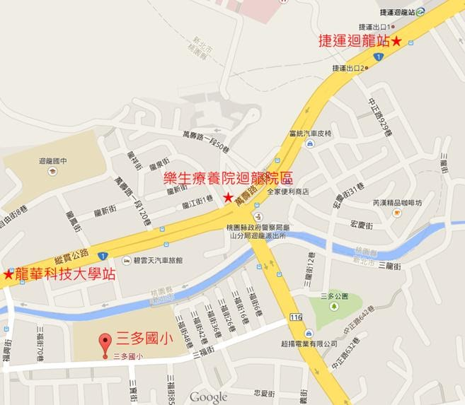

三多願景:
三多簡史一個陽光普照的小學--締造三多新風貌 迎向陽光新校園
1、發展人文的校風：
學校充滿人文的氣息，和諧的情境，每個人都懂得愛人、關懷人與感受他人的恩惠;擁有誠懇、熱情的心，以及身體力行的行動力。
2、經營優質的教育：
學校教育的內容與目標，著重啟發孩子個人的潛能，培養主動學習的態度，強調探究與建構式的學習歷程，以培育帶得走的能力。
3、營造活力的校園：
全校師生互動良好，親師合作共同實現教育目標，學校充滿活力與朝氣，老師寓教於樂、學生樂於學習成果豐碩。
4、培育健康的學生：
教師發揮教育大愛，全面關照每一位孩童，普及化均衡照顧，以及個別化的教學與生活輔導面面俱到，力求每位學生身心健康，人格發展健全。
三多簡史:
本校於民國76年05月11日成立籌備處，由樹林國小詹正信校長擔任籌備主任，著手規劃校園。
民國76年06月15日經鎮長邀集地方人士共同議定「三多國小」為校名。
民國77年07月08日縣府正式准於成立設校。8月15日縣府核定溫振有調派本校為創校校長。
民國79年01月10日 校舍工程奠基典禮。
民國80年09月01日 正式招生，計41班，約1082位學生。
民國82年08月01日 趙福來校長接任本校第二任校長。
民國83年06月08日 三多美術館完工。
民國84年08月01日 成立附設幼兒園。
民國86年04月01日 圖書館完工。
民國86年08月01日 莊清美校長接任本校第三任校長。
民國89年03月30日 操場完工。
民國90年08月01日 陳義霖校長接任本校第四任校長。
民國90年08月01日 設立資源班。
民國90年08月01日 成立躲避球隊。
民國95年08月01日 洪金山校長接任本校第五任校長。
民國99年08月01日 周麗櫻校長接任本校第六任校長。
民國101年08月16日 信義樓屋頂隔水防熱工程完工。
民國102年08月01日 成立棒球隊。
民國102年11月09日 仁愛樓屋頂防水隔熱工程完工。
民國104年12月05日 警衛室改建工程竣工。
民國106年03月21日 信義樓老舊廁所改建工程竣工。
民國106年09月27日 操場整修工程竣工。
民國107年08月01日 洪珮瑀校長接任本校第七任校長，迄今。
民國108年01月13日 信義樓、和平樓、感恩樓校舍耐震結構補強工程竣工。
民國108年05月31日 智慧樓校舍耐震結構補強工程竣工。
民國108年07月18日 仁愛樓、智慧樓外遮陽板設置工程完工。
民國108年08月01日 新北市中小學強棒深耕計畫學校(棒球代表隊)。
民國108年08月12日 圖書館整修工程竣工。
民國108年09月27日 校務評鑑八大項度全數通過，「學生輔導」向度榮譽通過，榮獲金質獎。
民國109年05月31日 智慧樓老舊廁所改建工程竣工。
民國109年06月07日 感恩樓校舍頂樓防水隔熱工程完工。
民國109年10月01日 感恩樓屋頂太陽能板裝設工程完工。
民國109年11月13日 操場司令台磁磚剝落及地板層漏水改善工程竣工。
民國110年06月29日 視聽教室改善工程完工。
民國110年08月01日 新北市體育重點學校-田徑類。
民國110年09月21日 忠孝樓老舊廁所改建工程竣工。
民國111年01月21日 冷氣裝設工程完工。
民國111年02月10日 電力系統改善工程完工。
民國111年03月18日 創客教室落成啟用。
民國111年06月29日 親和綠化植生牆完工。
民國111年09月18日 校門整修及改善工程完工。
民國112年09月18日 幼兒園2歲專班增班工程完工。
民國112年09月28日 幼兒園2歲專班開課。
民國112年11月13日 榮獲112年「新北市低碳校園標章」認證銀鵝獎。
民國112年11月27日 榮獲113年度新北市閱讀磐石優等獎。
民國113年01月19日 中央球場及跳遠沙坑整修工程完工。
民國113年07月12日 感恩樓3樓禮堂地坪工程完工。
民國113年08月28日 承辦113學年度三鶯區語文競賽。
民國114年06月18日 新建棒球運動場地工程完工。
三多校歌:
校歌樂譜:
校歌歌詞:
大同山之麓 塔寮坑溪畔 巍巍黌宮
這裡是我們的學校老師親切慈祥有愛心
同學彬彬有禮肯上進 師生一堂共切磋同遊戲樂也融融
我愛三多快樂多 學習多 成就更多
我們要立定志向 敦品力學 鍛鍊身體
現在做個活活潑潑的好學生 將來成為堂堂正正的好國民
交通位置:
交通地圖

交通方式：
一、捷運：搭乘4號中和新蘆線到迴龍站下車，出站後往樂生療養院迴龍院區方向步行約15分鐘可抵達本校。
二、公車：可搭乘635、636、藍37、橘21、橘22等公車，至龍華科技大學（光啟高中）站下車，步行約10分鐘可抵達本校。
三、自行開車：由樹林中正路方向轉三福街。